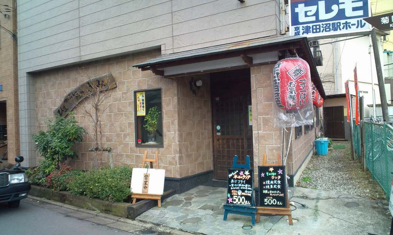
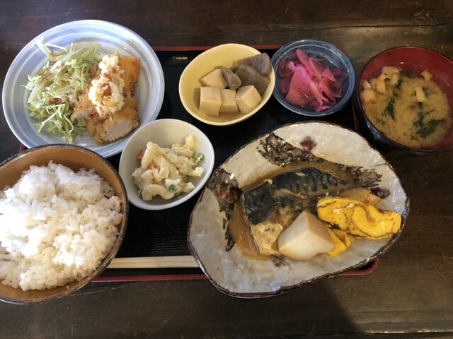
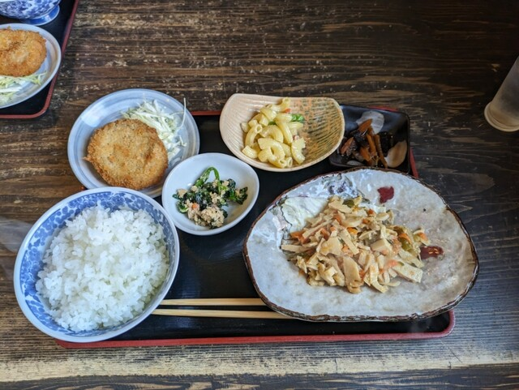

あなたのお気に入りの安いランチを見つけよう

場所はこちらここでは、酒処きみのお勧めの安いランチを紹介します。
この酒処きみでは、ランチタイムの500円ランチがお勧めです。このランチメニューは、

お勧め一つ目のランチメニューは、手作り特製さばみそ煮定食です。
定食の定番でもあり、とてもボリュームもあり満足感があります。そして、なんと値段が500円です。こんなにおかずの量があり値段もリーズナブルのお店は他にはない！

お勧め二つ目のランチメニューは、チンジャオロース定食です。
本日の日替りランチはきみ風チンジャオロース、コロッケに副菜で青菜の煮物、マカロニサラダ、お漬物でした。チンジャオロースはタケノコたっぷりで、中華のチンジャオロースとは一味違いとても美味しいです。是非食べてみてください！